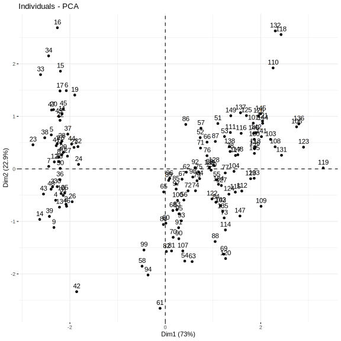
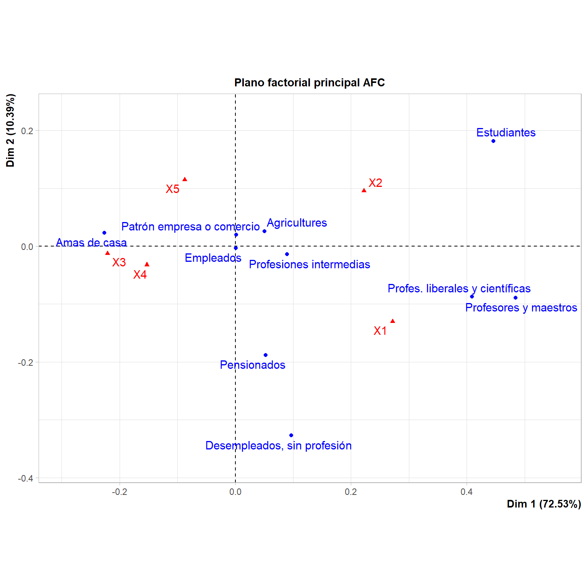
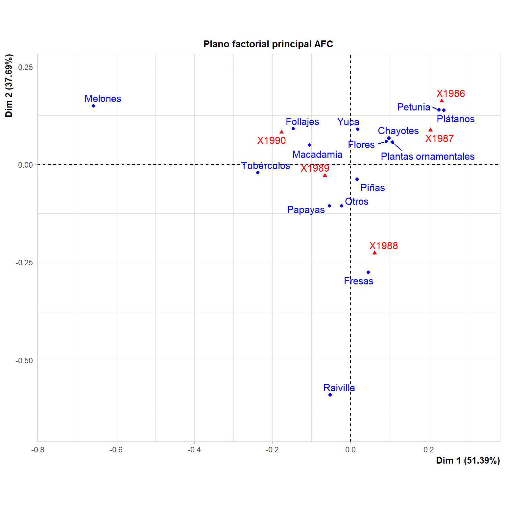

> data(iris, package = "datasets")Laboratorio 5
Joshua Cervantes Artavia
2023-10-03
Iris
> iris.PCA <- iris[, c("Sepal.Length", "Sepal.Width", "Petal.Length", "Petal.Width", "Species")]
> res <- PCA(iris.PCA, scale.unit = TRUE, ncp = 5, quali.sup = c(5:5), graph = FALSE)> print(plot.PCA(res, axes = c(1, 2), choix = "ind", habillage = "none", col.ind = "#0d1282", col.ind.sup = "blue", col.quali = "#d71313", label = c("ind", "ind.sup", "quali"), new.plot = TRUE, title = "Plano principal"))> print(plot.PCA(res, axes = c(1, 2), choix = "var", new.plot = TRUE, col.var = "black", col.quanti.sup = "blue", label = c("var", "quanti.sup"), lim.cos2.var = 0, title = "Círculo de correlaciones"))

> summary(res, nb.dec = 3, nbelements = 10, nbind = 10, ncp = 3, file = "")
Call:
PCA(X = iris.PCA, scale.unit = TRUE, ncp = 5, quali.sup = c(5:5),
graph = FALSE)
Eigenvalues
Dim.1 Dim.2 Dim.3 Dim.4
Variance 2.918 0.914 0.147 0.021
% of var. 72.962 22.851 3.669 0.518
Cumulative % of var. 72.962 95.813 99.482 100.000
Individuals (the 10 first)
Dist Dim.1 ctr cos2 Dim.2 ctr cos2 Dim.3
1 | 2.319 | -2.265 1.172 0.954 | 0.480 0.168 0.043 | -0.128
2 | 2.202 | -2.081 0.989 0.893 | -0.674 0.331 0.094 | -0.235
3 | 2.389 | -2.364 1.277 0.979 | -0.342 0.085 0.020 | 0.044
4 | 2.378 | -2.299 1.208 0.935 | -0.597 0.260 0.063 | 0.091
5 | 2.476 | -2.390 1.305 0.932 | 0.647 0.305 0.068 | 0.016
6 | 2.555 | -2.076 0.984 0.660 | 1.489 1.617 0.340 | 0.027
7 | 2.468 | -2.444 1.364 0.981 | 0.048 0.002 0.000 | 0.335
8 | 2.246 | -2.233 1.139 0.988 | 0.223 0.036 0.010 | -0.089
9 | 2.592 | -2.335 1.245 0.812 | -1.115 0.907 0.185 | 0.145
10 | 2.249 | -2.184 1.090 0.943 | -0.469 0.160 0.043 | -0.254
ctr cos2
1 0.074 0.003 |
2 0.250 0.011 |
3 0.009 0.000 |
4 0.038 0.001 |
5 0.001 0.000 |
6 0.003 0.000 |
7 0.511 0.018 |
8 0.036 0.002 |
9 0.096 0.003 |
10 0.293 0.013 |
Variables
Dim.1 ctr cos2 Dim.2 ctr cos2 Dim.3 ctr
Sepal.Length | 0.890 27.151 0.792 | 0.361 14.244 0.130 | -0.276 51.778
Sepal.Width | -0.460 7.255 0.212 | 0.883 85.247 0.779 | 0.094 5.972
Petal.Length | 0.992 33.688 0.983 | 0.023 0.060 0.001 | 0.054 2.020
Petal.Width | 0.965 31.906 0.931 | 0.064 0.448 0.004 | 0.243 40.230
cos2
Sepal.Length 0.076 |
Sepal.Width 0.009 |
Petal.Length 0.003 |
Petal.Width 0.059 |
Supplementary categories
Dist Dim.1 cos2 v.test Dim.2 cos2 v.test
setosa | 2.244 | -2.225 0.983 -11.240 | 0.289 0.017 2.608 |
versicolor | 0.748 | 0.496 0.441 2.508 | -0.550 0.541 -4.967 |
virginica | 1.753 | 1.728 0.971 8.732 | 0.261 0.022 2.359 |
Dim.3 cos2 v.test
setosa -0.043 0.000 -0.965 |
versicolor -0.096 0.017 -2.166 |
virginica 0.139 0.006 3.131 |Tabla 4.10
> profesion_respuesta <- readXL("C:/Users/saac9/OneDrive - Universidad de Costa Rica/Documents/UCR/2023/Topicos_de_analisis_de_datos_1/Laboratorios/Ejercicios-Cap4.xlsx",
+ rownames = TRUE, header = TRUE, na = "", sheet = "3.Profesión-FMI",
+ stringsAsFactors = FALSE
+ )> profesion_respuesta.CA <- profesion_respuesta[c(
+ "Agricultures", "Patrón empresa o comercio", "Profes. liberales y científicas", "Empleados", "Profesiones intermedias", "Profesores y maestros", "Estudiantes", "Pensionados",
+ "Amas de casa", "Desempleados, sin profesión"
+ ), c("X1", "X2", "X3", "X4", "X5")]
>
> res <- CA(profesion_respuesta.CA, ncp = 5, row.sup = NULL, col.sup = NULL, graph = FALSE)> print(plot.CA(res, axes = c(1, 2), col.row = "blue", col.col = "red", title = "Plano factorial principal AFC"), label = c("col", "col.sup", "row", "row.sup"))
> summary(res, nb.dec = 3, nbelements = 10, nbind = 10, ncp = 3, file = "")
Call:
CA(X = profesion_respuesta.CA, ncp = 5, row.sup = NULL, col.sup = NULL,
graph = FALSE)
The chi square of independence between the two variables is equal to 90.53325 (p-value = 1.362483e-06 ).
Eigenvalues
Dim.1 Dim.2 Dim.3 Dim.4
Variance 0.046 0.007 0.006 0.005
% of var. 72.527 10.392 9.857 7.225
Cumulative % of var. 72.527 82.919 92.775 100.000
Rows
Iner*1000 Dim.1 ctr cos2 Dim.2
Agricultures | 0.587 | 0.051 0.097 0.076 | 0.026
Patrón empresa o comercio | 3.906 | 0.002 0.001 0.000 | 0.020
Profes. liberales y científicas | 9.479 | 0.409 19.349 0.935 | -0.087
Empleados | 0.146 | 0.001 0.001 0.003 | -0.003
Profesiones intermedias | 3.909 | 0.089 0.841 0.099 | -0.014
Profesores y maestros | 6.478 | 0.484 12.140 0.859 | -0.089
Estudiantes | 16.451 | 0.446 30.338 0.845 | 0.182
Pensionados | 2.773 | 0.052 0.286 0.047 | -0.188
Amas de casa | 17.155 | -0.226 36.619 0.978 | 0.023
Desempleados, sin profesión | 2.294 | 0.097 0.328 0.066 | -0.327
ctr cos2 Dim.3 ctr cos2
Agricultures 0.178 0.020 | 0.170 8.122 0.862 |
Patrón empresa o comercio 0.602 0.010 | 0.180 52.335 0.834 |
Profes. liberales y científicas 6.182 0.043 | -0.062 3.307 0.022 |
Empleados 0.051 0.023 | -0.010 0.474 0.202 |
Profesiones intermedias 0.147 0.002 | -0.163 20.623 0.329 |
Profesores y maestros 2.866 0.029 | 0.165 10.350 0.099 |
Estudiantes 35.116 0.140 | -0.046 2.349 0.009 |
Pensionados 25.985 0.615 | -0.021 0.339 0.008 |
Amas de casa 2.698 0.010 | -0.020 2.083 0.008 |
Desempleados, sin profesión 26.175 0.749 | -0.008 0.019 0.001 |
Columns
Iner*1000 Dim.1 ctr cos2 Dim.2
X1 | 16.598 | 0.272 28.719 0.793 | -0.130
X2 | 15.476 | 0.222 27.026 0.800 | 0.096
X3 | 17.279 | -0.221 33.900 0.899 | -0.012
X4 | 7.561 | -0.153 9.075 0.550 | -0.032
X5 | 6.264 | -0.087 1.281 0.094 | 0.115
ctr cos2 Dim.3 ctr cos2
X1 46.052 0.182 | 0.040 4.563 0.017 |
X2 35.030 0.149 | -0.055 12.283 0.049 |
X3 0.745 0.003 | -0.044 9.814 0.035 |
X4 2.770 0.024 | 0.011 0.357 0.003 |
X5 15.403 0.161 | 0.243 72.983 0.726 |En este caso se puede observar como se genera un grupo al rededor de la respuesta 1 que es en total desacuerdo de tal forma que este grupo aporta de mayor forma a la respuesta. Por otro lado se puede observar que las respuestas no tan de acuerdo y en total desacuerdo se cotraponen a todas la demás que se ven más asociadas a respuestas de amas de casa, patrones y empleados, aunque estos dos últimos parecen aportar lo mismo para los dos grupos de respuestas que se contraponen. En este caso se pueden conservar los autovalores que superen el 100/4 = 25 de varianza explicada (inercia), sin embargo, en ese caso conservaríamos únicamente el primer eje, en dado caso podrían tomarse los dos primeros y estos a su vez superan el 75% de inercia acumula que puede ser tomado como un criterio global para escogencia de los autovalores.
Tabla 4.11
> exportaciones_costa_rica <-
+ readXL("C:/Users/saac9/OneDrive - Universidad de Costa Rica/Documents/UCR/2023/Topicos_de_analisis_de_datos_1/Laboratorios/Ejercicios-Cap4.xlsx",
+ rownames = TRUE, header = TRUE, na = "", sheet = "4.Exportaciones", stringsAsFactors = FALSE
+ )> exportaciones_costa_rica.CA <- exportaciones_costa_rica[c(
+ "Plantas ornamentales", "Flores", "Follajes", "Chayotes",
+ "Yuca", "Tubérculos", "Piñas", "Plátanos", "Macadamia", "Fresas", "Melones", "Papayas", "Petunia", "Raivilla",
+ "Otros"
+ ), c("X1986", "X1987", "X1988", "X1989", "X1990")]
> res <- CA(exportaciones_costa_rica.CA, ncp = 5, row.sup = NULL, col.sup = NULL, graph = FALSE)> print(plot.CA(res, axes = c(1, 2), col.row = "blue", col.col = "red", title = "Plano factorial principal AFC"), label = c("col", "col.sup", "row", "row.sup"))
> summary(res, nb.dec = 3, nbelements = 10, nbind = 10, ncp = 3, file = "")
Call:
CA(X = exportaciones_costa_rica.CA, ncp = 5, row.sup = NULL,
col.sup = NULL, graph = FALSE)
The chi square of independence between the two variables is equal to 23.55103 (p-value = 0.9999593 ).
Eigenvalues
Dim.1 Dim.2 Dim.3 Dim.4
Variance 0.023 0.017 0.004 0.001
% of var. 51.388 37.692 8.832 2.087
Cumulative % of var. 51.388 89.080 97.913 100.000
Rows (the 10 first)
Iner*1000 Dim.1 ctr cos2 Dim.2 ctr cos2
Plantas ornamentales | 3.067 | 0.106 9.335 0.696 | 0.057 3.661 0.200
Flores | 0.985 | 0.091 3.021 0.702 | 0.059 1.714 0.292
Follajes | 3.699 | -0.147 9.016 0.557 | 0.092 4.799 0.218
Chayotes | 1.176 | 0.098 1.402 0.273 | 0.068 0.910 0.130
Yuca | 0.798 | 0.018 0.090 0.026 | 0.090 2.919 0.614
Tubérculos | 1.657 | -0.238 6.947 0.959 | -0.021 0.075 0.008
Piñas | 1.396 | 0.016 0.321 0.053 | -0.038 2.354 0.283
Plátanos | 1.271 | 0.239 3.889 0.700 | 0.139 1.788 0.236
Macadamia | 0.181 | -0.105 0.481 0.607 | 0.050 0.147 0.136
Fresas | 1.111 | 0.045 0.074 0.015 | -0.276 3.828 0.578
Dim.3 ctr cos2
Plantas ornamentales | 0.041 7.999 0.103 |
Flores | 0.001 0.001 0.000 |
Follajes | 0.093 21.012 0.223 |
Chayotes | -0.139 16.399 0.548 |
Yuca | -0.020 0.618 0.030 |
Tubérculos | -0.044 1.367 0.032 |
Piñas | -0.058 23.181 0.653 |
Plátanos | -0.069 1.878 0.058 |
Macadamia | 0.048 0.597 0.129 |
Fresas | -0.199 8.505 0.301 |
Columns
Iner*1000 Dim.1 ctr cos2 Dim.2 ctr cos2
X1986 | 9.017 | 0.233 25.242 0.640 | 0.162 16.714 0.311
X1987 | 7.768 | 0.204 26.852 0.791 | 0.088 6.786 0.147
X1988 | 11.894 | 0.062 3.441 0.066 | -0.227 63.592 0.897
X1989 | 3.990 | -0.066 4.668 0.268 | -0.028 1.186 0.050
X1990 | 11.833 | -0.177 39.797 0.769 | 0.082 11.723 0.166
Dim.3 ctr cos2
X1986 | 0.003 0.029 0.000 |
X1987 | 0.009 0.309 0.002 |
X1988 | 0.045 10.888 0.036 |
X1989 | -0.105 69.301 0.683 |
X1990 | 0.051 19.473 0.065 |En este caso se puede observar que existen dos exportaciones que se encuentran claramente alejadas de las demás así como del resto de años. Se puede observar que los platanos, petunias y chayotes, plantas ornamentales y flores aportaron más a los años 1986 y 1987, además de que estas se encuentran muy cercanas por lo que el comportamiento es similar. Ahora en cuanto a los años 1990 y 1989 estos se contraponen a los años 1986 y 1987 y la mayoría de las exportaciones están asociadas a tubércolos, macadamia y frijoles. En el año 1988 las fresas presentan una mayor presencia en comparación con años anteriores. Es interesante observar como los años donde los productos se encuentran más cercanos están asociados con gran aumento de en los montos de los mismos. En cuanto a calidad se podría decir que se pueden conservar los primeros ejes que que tengan una inercia explicada superior a 100/4 = 25 y que el siguiente eje sea inferior a este valor en este caso podría ser posible conservar los tres primeros ejes, aunque si se hicera por regla global de 75% se puedría conservar únicamente los primeros dos 2 ejes en general la calidad de representación se puede considerar como buena.